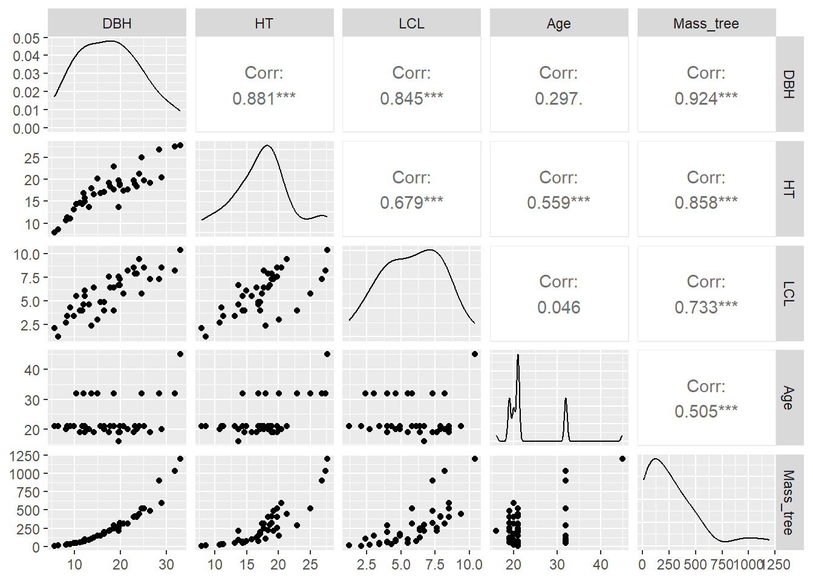
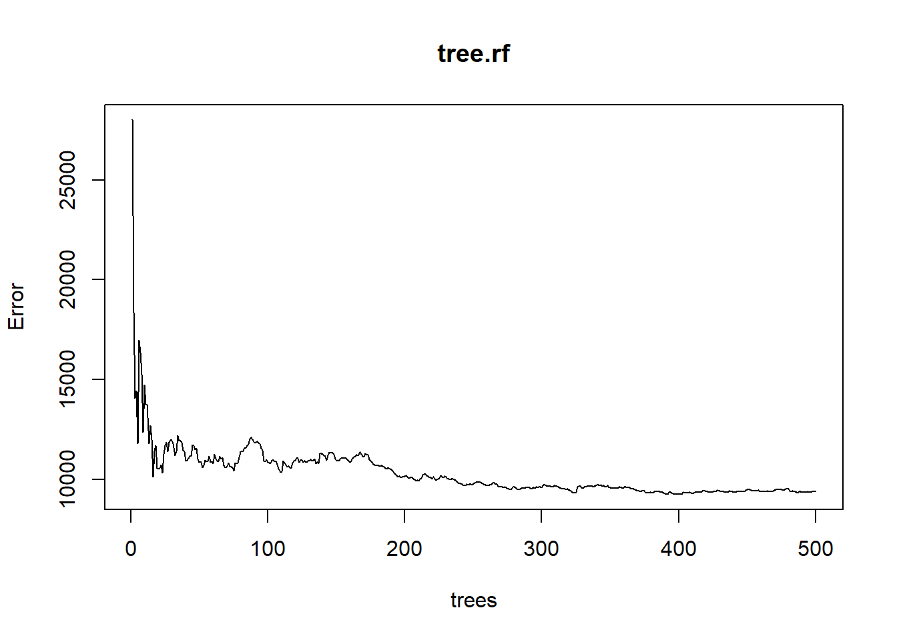
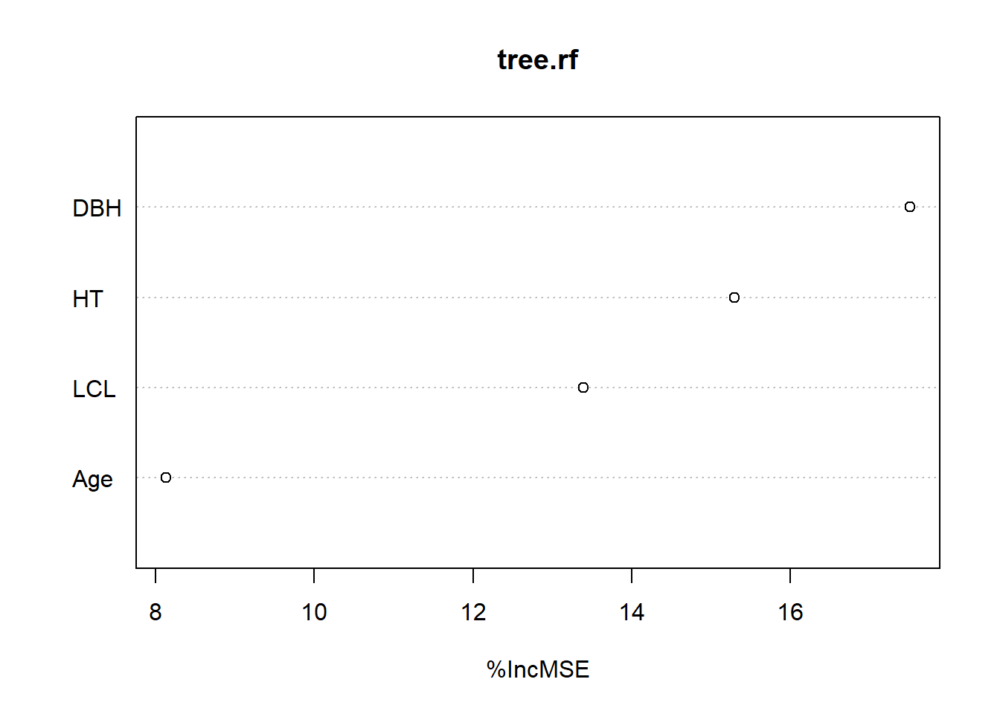
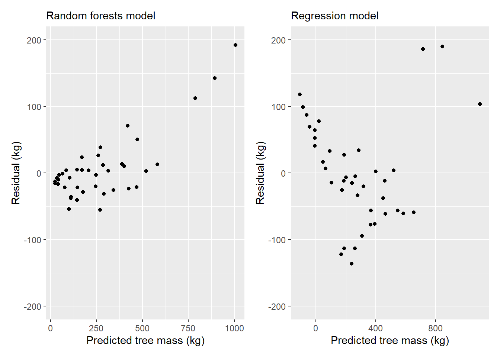

library(tidyverse)
library(googlesheets4)
tree <- read_sheet("https://docs.google.com/spreadsheets/d/1TPutUVyZLWr7XopKguT5Nvh9lo1EOG4wvOZ6_lD1F_M/edit?usp=sharing")
Random forests have quickly become one of the most popular analytical techniques used in forestry today. Random forests (RF) are a machine learning technique that differ in many ways to traditional prediction models such as regression. Random forests can handle a lot of data, can be applied to classification or regression problems, and rank the relative importance of many variables that are related to a response variable of interest.
I’ve written about the theory behind random forests. This post will present a tutorial of using random forests in R.
The Parresol tree biomass data
As an example, we’ll use a data set of 40 slash pine trees from Louisiana USA presented in Parresol’s 2001 paper Additivity of nonlinear biomass equations. The data are presented in Table 1 of the paper, which is replicated in this Google Sheet.
We’ll read in the data using the read_sheet() function from the googlesheets4 package. We will also load the tidyverse package to use some of its plotting features:
The data contain the following variables:
TreeID: Tree observation record,DBH: Tree diameter at breast height, cm,HT: Tree height, m,LCL: Tree live crown length, m,Age: Age of the tree, years,Mass_wood: Green mass of the wood in the tree, kg,Mass_bark: Green mass of the bark in the tree, kg,Mass_crown: Green mass of the crown of the tree, kg, andMass_tree: Green mass of all tree components, kg.
Our ultimate interest is in predicting the mass all tree components using common tree measurements such as tree diameter, height, live crown length, and age. Before we start modeling with the data, it is a good practice to first visualize the variables. The ggpairs() function from the GGally package is a useful tool that visualizes the distribution and correlation between variables:
library(GGally)
ggpairs(tree, columns = c(2:5, 9))
You can see a few variables have strong positive correlations with the mass of the tree (e.g., height and diameter) and some more moderate positive correlations (e.g., age).
The randomForest R package
R and Python both have numerous packages that implement random forests. In R alone, there are nearly 400 packages with the word “tree” or “forest” in their name. (Sidebar: This is not ideal if you’re a forest analyst of biometrician because only 31 of them are actually about forestry.)
Breiman wrote about random forests in 2001 and a year later Liaw and Wiener created an R package that implements the technique. To date, the randomForest R package remains one of the most popular ones in machine learning.
We can install and load the randomForest package:
# install.packages("randomForest")
library(randomForest)We will use the randomForest() function to predict total tree mass using several variables in the tree data set. A few other key statements to use in the randomForest() function are:
keep.forest = T: This will save the random forest output, which will be helpful in summarizing the results.importance = TRUE: This will assess the importance of each of the predictors, essential output in random forests!mtry = 1: This tells the function to randomly sample one variable at each split in the random forest. For applications in regression, the default value is the number of predictor variables divided by three (and rounded down). In the modeling, several small samples of the entire data set are taken. Any observations that are not taken are called “out-of-bag” samples.ntree = 500. This tells the function to grow 500 trees. Generally, a larger number of trees will produce more stable estimates. However, increasing the number of trees needs to be done with consideration of time and memory issues when dealing with large data sets.
Our response variable in the random forests model is Mass_tree and predictors are DBH, HT, LCL, and Age.
tree.rf <- randomForest(Mass_tree ~ DBH + HT + LCL + Age,
data = tree,
keep.forest = T,
importance = TRUE,
mtry = 1,
ntree = 500)
tree.rf
Call:
randomForest(formula = Mass_tree ~ DBH + HT + LCL + Age, data = tree, keep.forest = T, importance = TRUE, mtry = 1, ntree = 500)
Type of random forest: regression
Number of trees: 500
No. of variables tried at each split: 1
Mean of squared residuals: 9415.002
% Var explained: 87.27Note the mean of squared residuals and the percent variation explained (analogous to R-squared) provided in the output. (We’ll revisit them later.)
Another way to visualize the out-of-bag error rates of the random forests models is to use the plot() function. In this application, although we specified 500 trees, the out-of-bag error generally stabilizes after 100 trees:
plot(tree.rf)
Some of the most helpful output in random forests is the importance of each of the predictor variables. The importance score is calculated by evaluating the regression tree with and without that variable. When evaluating the regression tree, the mean square error (MSE) will go up, down, or stay the same.
If the percent increase in MSE after removing the variable is large, it indicates an important variable. If the percent increase in MSE after removing the variable is small, it’s less important.
The importance() function prints the importance scores for each variable and the varImpPlot() function plots them:
importance(tree.rf) %IncMSE IncNodePurity
DBH 17.507804 880292.7
HT 15.296300 807963.8
LCL 13.388462 639453.3
Age 8.131857 408963.7varImpPlot(tree.rf,type=1)
The output indicates that DBH is the most important variable for predicting Mass_tree and age the least important.
Comparing random forests and regression models
Forest analysts are often compare multiple models and determine which one has a better predictive ability. In this case, we can fit a multiple linear regression model to the data and compare to the random forests model.
The lm() function can be used to develop a parametric model for Mass_tree:
tree.reg <- lm(Mass_tree ~ DBH + HT + LCL + Age, data = tree)
summary(tree.reg)
Call:
lm(formula = Mass_tree ~ DBH + HT + LCL + Age, data = tree)
Residuals:
Min 1Q Median 3Q Max
-136.285 -57.177 -9.399 43.822 189.758
Coefficients:
Estimate Std. Error t value Pr(>|t|)
(Intercept) -545.374 67.916 -8.030 1.89e-09 ***
DBH 40.523 5.778 7.013 3.68e-08 ***
HT -15.048 8.079 -1.862 0.0709 .
LCL 2.490 12.259 0.203 0.8402
Age 15.431 3.198 4.825 2.72e-05 ***
---
Signif. codes: 0 '***' 0.001 '**' 0.01 '*' 0.05 '.' 0.1 ' ' 1
Residual standard error: 82.33 on 35 degrees of freedom
Multiple R-squared: 0.9198, Adjusted R-squared: 0.9106
F-statistic: 100.4 on 4 and 35 DF, p-value: < 2.2e-16Note the residual standard error of 82.33 kg and the adjusted R-squared of 0.91. The residual standard error is slightly lower and the R-squared value slightly higher for the multiple regression model compared to the random forest output. In addition, further work may be conducted on the multiple regression model by removing the non-significant variables and refitting the model.
Another aspect of model evaluation is comparing predictions. Although random forests models are often considered a “black box” method because their results are not easily interpreted, the predict() function provides predictions of total tree mass:
Mass_pred_rf <- predict(tree.rf, tree, predict.all = F)
Mass_pred_reg <- predict(tree.reg, tree, predict.all = F)In an ideal setting we might test our model on an independent data set not used in model fitting. However, we can combine the predicted tree weights from both models to the tree data set:
tree2 <- as.data.frame(cbind(tree, Mass_pred_rf, Mass_pred_reg))Note that some predictions from the linear regression model on the 40 trees provide negative values for predicted total tree mass, an undesirable feature that may need to be addressed before implementing the model:
tree2 %>%
summarize(Mass_tree, Mass_pred_rf, Mass_pred_reg)Warning: Returning more (or less) than 1 row per `summarise()` group was deprecated in
dplyr 1.1.0.
ℹ Please use `reframe()` instead.
ℹ When switching from `summarise()` to `reframe()`, remember that `reframe()`
always returns an ungrouped data frame and adjust accordingly. Mass_tree Mass_pred_rf Mass_pred_reg
1 9.8 25.21493 -108.051811
2 12.1 25.05643 -86.903051
3 24.4 40.88979 -62.814807
4 27.0 34.52743 -42.513067
5 33.6 43.41506 -7.391764
6 43.5 45.98330 -8.814627
7 46.0 99.98358 168.354603
8 56.1 77.63545 -8.073626
9 64.4 65.60557 47.563293
10 70.8 108.85428 64.024945
11 75.9 111.52683 189.278688
12 88.7 84.93915 103.439719
13 95.7 102.76580 18.126885
14 102.4 143.41118 238.684823
15 123.7 145.36054 90.880242
16 147.6 176.06111 261.258307
17 148.5 143.53247 174.276553
18 174.8 170.33346 186.750002
19 193.0 169.30845 199.939638
20 211.7 207.50296 306.293014
21 214.6 269.89235 186.964881
22 225.3 245.55534 240.537957
23 244.7 247.63206 277.932654
24 258.2 289.27981 263.034375
25 285.8 259.22561 363.444771
26 297.6 285.91326 317.816460
27 309.8 270.94465 366.051168
28 316.2 342.13331 392.605018
29 318.0 314.38717 283.934957
30 401.1 424.69591 399.000959
31 402.2 389.01151 463.875242
32 411.9 401.71263 450.015697
33 446.3 467.22418 458.158909
34 490.3 419.49775 546.871939
35 522.6 519.87912 583.516204
36 522.7 472.62866 519.012527
37 593.6 580.70856 652.592720
38 900.3 788.07493 714.152257
39 1034.9 892.33950 845.142484
40 1198.5 1006.03689 1095.330861We may also be interested in plotting residual values from both model types to compare their performance:
p.rf <- ggplot(tree2, (aes(x = Mass_pred_rf, y = Mass_tree - Mass_pred_rf))) +
geom_point() +
scale_y_continuous(limits = c(-200, 200)) +
labs(x = "Predicted tree mass (kg)",
y = "Residual (kg)",
subtitle = "Random forests model")
p.reg <- ggplot(tree2, (aes(x = Mass_pred_reg, y = Mass_tree - Mass_pred_reg))) +
geom_point() +
scale_y_continuous(limits = c(-200, 200)) +
labs(x = "Predicted tree mass (kg)",
y = "Residual (kg)",
subtitle = "Regression model")
library(patchwork)
p.rf + p.reg
With the heteroscedastic residuals in the models, we’d likely want to explore transforming the data prior to model fitting, or to explore other modeling techniques.
Summary
Random forests techniques are flexible and can perform comparably with other regression or classification methods. Random forests can handle all types of data (e.g., categorical, continuous) and are advantageous because they work well with data sets containing a large number of predictor variables. The randomForest package has seen a lot of development and can be used to help solve modeling problems in your future forest analytics work.
–
By Matt Russell. Email Matt with any questions or comments. Sign up for my monthly newsletter for in-depth analysis on data and analytics in the forest products industry.